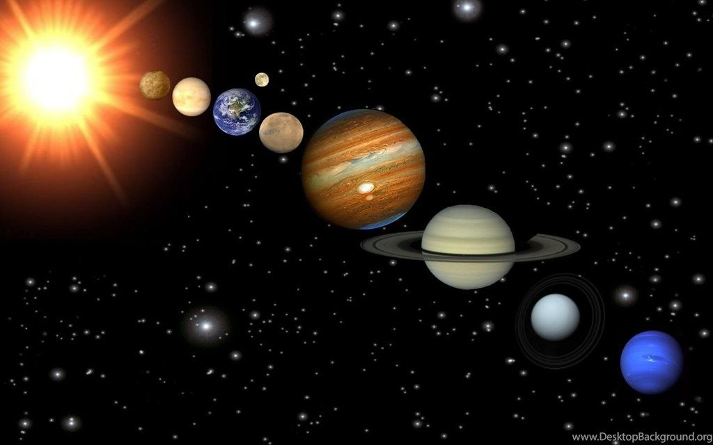

A Naprendszer a Nap gravitációja által egyben tartott bolygórendszer, egyike a Tejútrendszer milliárd csillagrendszerének, amely galaxisunk Orion spirálkarjának nagyjából a felénél, a galaxis közepe és pereme között is hozzávetőleg félúton helyezkedik el. A Naprendszer határa a Naptól számított 8-10 billió km (kb. 1 fényév).
Bolygónknak, a Földnek otthont adó Naprendszerünk középpontjában a Nap található. Csillagunk gravitációs térrészén belüli objektumok és kölcsönhatások összessége jelenti a Naprendszert. Központi csillagunk hozzávetőleg 4,6 milliárd évvel ezelőtt alakult ki egy hatalmas gázfelhő gravitációs összehúzódása nyomán. Nem sokkal később, már 4,567 milliárd évvel ezelőtt a csillagkeletkezésnél visszamaradt, a Nap egyenlítői síkjában lapos korongba rendeződött anyagból, a protoplanetáris korongból kialakultak az első kisbolygók, majd bolygók. A belső Naprendszerben négy kőzetbolygó (a Merkúr, a Vénusz, a Föld és a Mars), a külső Naprendszerben négy óriásbolygó (a Jupiter, a Szaturnusz, az Uránusz és a Neptunusz) és az öt törpebolygó (Ceres, Pluto, Haumea, Makemake, Eris) alakult ki. A kőzetbolygók kérge szilikátos, a gázbolygók viszonylag kis szilárd magját hatalmas hidrogén-hélium légkör veszi körül, a törpebolygók összetétele jeges kőzet.
A rendszerben vannak szabadon keringő testek is, ezek az üstökösök, a kentaurok és a mindenütt jelenlévő bolygóközi por. Ezek zömének keringése merőben eltér a többi testétől: vagy elnyújtott ellipszispályákon, vagy az ekliptikáétól eltérő síkban mozognak.